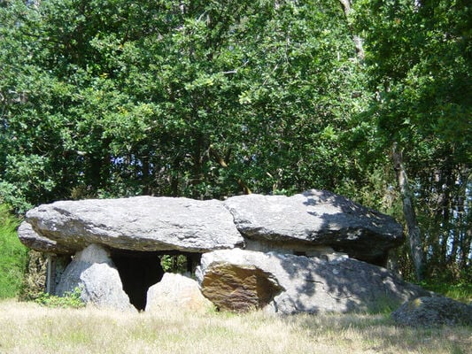
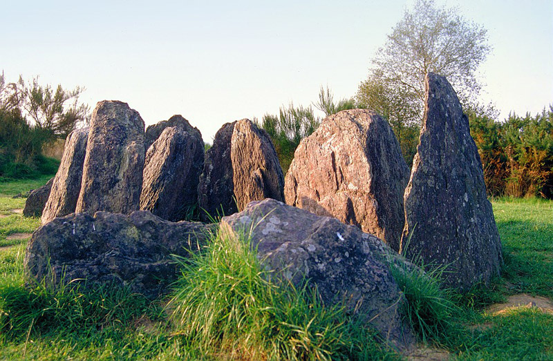

Disséminés aux marges de la forêt, les deux dolmens se dressent comme deux échos minéraux, endormis depuis des siècles dans des clairières qui ne se ressemblent en rien. Ils n’apparaissent sur aucune carte touristique, mais les randonneurs curieux — et les membres de la Guilde les plus superstitieux — savent qu’ils sont là. Et qu’ils écoutent.
Le premier, à l’extrême nord-ouest, est le plus accessible. Une large clairière l’entoure, comme si les arbres eux-mêmes refusaient de trop s’en approcher. La mousse qui recouvre le socle de pierre est étonnamment douce, presque accueillante, et la lumière y joue de manière étrange, filtrée par des feuillages toujours mouvants. Ce lieu ne semble pas menaçant. Mais il ne cherche pas à rassurer pour autant. Ceux qui s’y arrêtent longtemps repartent souvent distraits, comme perdus dans leurs propres pensées.
Ce dolmen est composé d’une grande dalle plate où se posent parfois des Phoenicurus, soutenue par six pierres de pierre. L’ensemble, bien que simple en apparence, dégage une harmonie troublante — comme si chaque élément avait été soigneusement placé pour répondre à une logique oubliée. Les plus irrationnels, certains membres de la Guilde notamment, y voient un vestige de stratégies mentales plus anciennes, d’architectures psychiques oubliées. L’air y est respirable, toujours propre, comme si le site lui-même filtrait l’atmosphère. Et l’atmosphère y est suspendue, comme en attente de vos propres pensées.
À l’autre extrémité de Brocéliande, dans les profondeurs plus sombres et humides du sud-est, un second dolmen repose, partiellement effondré, parmi des pierres dispersées comme les restes d’un ancien jeu. La lumière y titube parfois brisée par les chants des Lions. Même dans les nuits les plus claires éveillent des échos moins humains. Ce lieu n’inspire pas la peur, mais une forme de respect involontaire. Ici, on ne parle pas fort.
La Guilde ne reconnaît pas officiellement ces lieux comme sites d’intérêt stratégique. Mais ils apparaissent régulièrement dans les carnets personnels des anciens chasseurs. Des notes marginales, souvent : “Dolmen Nord — sensations inhabituelles.” “Sud-est — activité silencieuse, éviter de bivouaquer.” Rien d’alarmant. Juste… des conseils de prudence.
Peut-on les visiter ? Bien sûr. Ce sont des pierres, après tout. Mais à Brocéliande, même les pierres se souviennent.